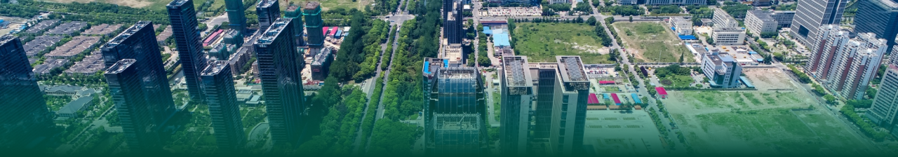

Smart Tax
A property survey platform that uses Mobile Mapping System (MMS) data to help local governments find more taxable assets.
A registry system for land, building, sign, and condominium tax. It helps local governments collect property data to calculate tax assessments. AI helps survey some asset types, such as signs.
Goals
- Improve the design based on user feedback
- Reduce survey work for officers
- Bring AI into officers' daily work
Design Process
I analyzed the legacy system that most officers already used, mainly through heuristic evaluation and usability testing. I also consulted domain experts to understand the system, find the problems, and improve the product for a better user experience.
Empathize
I consulted domain experts to understand how the system works. Then I prepared interview questions about officers' daily tasks.
Interviews with regular users showed their roles, workflows, and main problems.
Define
Problems
- Outdated data means officers must survey again
- Checking past records takes too many steps
- Each officer works differently, based on their own experience
- Importing and updating data is difficult
Insights
- Too few staff for the workload
- Don't want to do the same work twice
- Want complete data without field surveys
- Want to collect more tax revenue
Why it matters
- Gaps let some owners avoid paying tax
- The total taxable assets in the area are unknown
Ideate
- Use a survey vehicle to detect newly installed signs in regular rounds
- Keep a history of every survey for each record
- Refine the user flow and run usability tests to set one standard way of working for every municipality
- Design an import menu that fits the system's workflow
User Flow
Main menu: SurveyDesign


What I learned
- Learned how local property tax works
- Worked with flexible schedules
- Used retrospectives to solve team issues